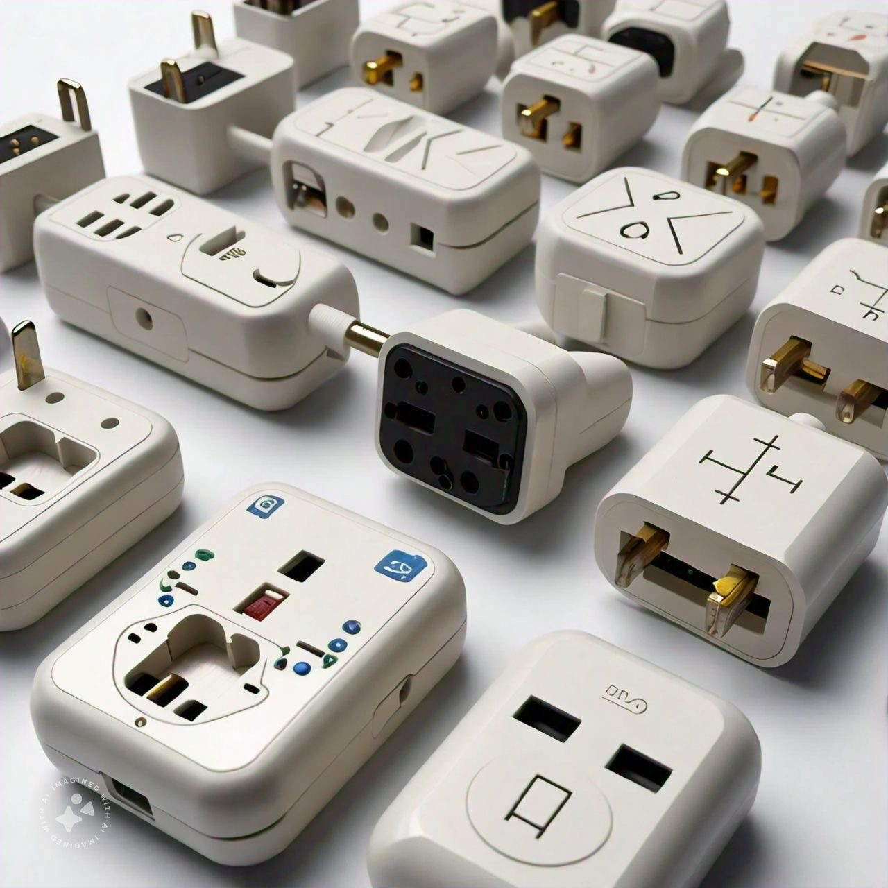

International All in One Worldwide Travel Adapter and Wall Charger
with USB Ports with Multi Type Power Outlet USB 2.1A,100-250 Voltage Travel Charger (Black)

Price: ₹589
For latest discounts, please click on "Buy Now"
Why you should BUY!
The International All in One Worldwide Travel Adapter and Wall Charger is an essential travel accessory for anyone who travels frequently. Its compact design and multiple USB ports make it convenient to charge multiple devices simultaneously. The adapter is compatible with power outlets in over 150 countries, ensuring you stay connected wherever you go. Upgrade your travel gear with this versatile and reliable travel adapter.
Rating: ★★★★☆ (4.2/5)
How to USE
Using the International All in One Worldwide Travel Adapter and Wall Charger is simple and straightforward:
- Choose the appropriate plug type for the country you are in.
- Insert the plug into the power outlet.
- Connect your device to the adapter using the USB ports or the power outlet.
- Ensure the device is charging or powered on.
- When finished, unplug the adapter from the power outlet.
- Store the adapter in a safe place for future use.
Stay connected and powered up wherever you go with the International All in One Worldwide Travel Adapter and Wall Charger!
Buy Now
Go Back